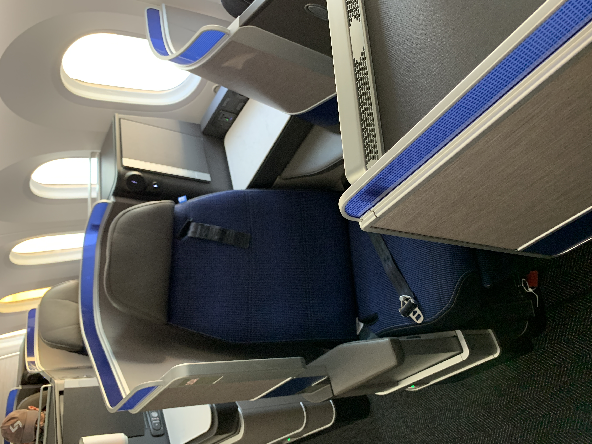
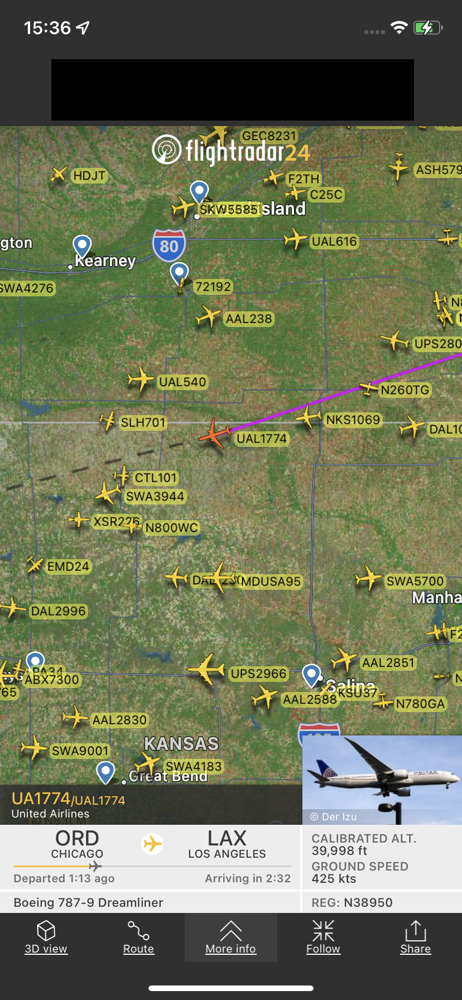

Below is Post 3.
Two Planes, Two Seats, Two Flights: United Boeing 787-9 in First (Polaris and Diamond)
I have no clue how I managed to clear two CPU upgrades on a route like Chicago to LA. This is probably one of the more “elite-heavy” routes. American and United each have hubs at both ends, Delta doesn’t serve this route (as of the time of flight), Alaska only has a hub at LA, and Spirit only has a focus city in Chicago, so some might think that the number of elites would be more distributed than, say, Chicago to San Francisco. Maybe.
Both of my flights will be flown by planes in the old paint, but in different interior configurations.
Here’s the gate area.
I like this new signage.
This… not so much.
I was directed to go through L1, and so I got a look at the forward “Polaris” cabin…
And rear “Polaris” cabin.

I had seat 10A, which is what I was given when my CPU cleared. I’m just glad it cleared.
Predeparture beverage choices were water or some other alcoholic option (I think it was sparkling wine). I had water.
I did take a bathroom visit before departure. Note the toiletries (like the lotion).
And thankfully, there were two overhead air vents!
Here’s a repainted Boeing 777-200ER going to San Francisco.
I put “Polaris” in quotation marks because this plane, while it had the new Polaris Business Class seats, was flying a domestic flight, so domestic First Class service was available. Only while flying on an intercontinental flight (or internationally) would legitimate Polaris Business Class service be available.
Even though we departed a bit late (I noticed ground crew in neon yellow vests getting on the plane and walking off with bags of blankets that seemed to be used), we’d arrive a bit early. Not that it mattered much.
I did make another bathroom visit just to wash my hands. The sink is automatically activated and there are still some toiletries (like lotion) available even though this flight is domestic.
The toilet does have the smart “close the lid and flush” available.
Apparently, this is a “Lunch” flight. I didn’t remember that United restored full meals a while back to their longer hub-to-hub flights.

Today’s options were some “Southwestern Chicken with Rice” or “Ragu Polenta” (I don’t remember the second one). Both are served with a warm “Pie in the Sky”, warm roll, butter, and fruit.

I had the chicken with rice option. I thought it was bland, so I added salt.
The person across the aisle had the ragu option, I asked if I could photograph it. He gladly did so.
Of course, silverware is restored!
Here’s the view from my seat.

Seat controls are… yeah, I didn’t like them. It’s placed in a position where I could easily accidentally bump into them. More on that later.
As with the other “Polaris” flight that I took, there was a faux lamp that didn’t seem to be very bright.
Anytime there’s a remote, I’d use it. I don’t know, it just gives me a bit of a… “I’m in a lounge chair watching TV at home” feel. Near it is a 110V AC outlet, USB-A port, and (two) headphone plugs.

The windows can be dimmed on the IFE screen, or on the window dimmer below the window. I’d rather have shades…

The armrest can be lowered, which is definitely helpful for my seat!

The default position is raised, though.
A 15.6-inch screen (I think) is the IFE for today’s flight.

Or you could use a tablet, which you could place on the provided tablet holder.

Which, by the way, is built in the tray.

Here’s the seat when it’s lie-flat. I can attest that it felt narrow.

Little secret: even though I only activated the text messaging plan for the onboard internet, I was able to access other apps and sites (like Flightradar24). I spent some time connecting with my friends on the ground on social media (like Snapchat and Instagram). For those who use TikTok, the internet was only fast enough to load a few videos, then it started buffering.
Annoyingly, the lights were never shut off. It remained in this little “orange/sunset” option.
And the footwell. Gosh, those were narrow! I wear size 10 shoes, and I only had a bit extra space in there.
Here’s the view of my seat going forward.
And here’s the view from my seat.
The view out of the window is obstructed by this giant engine.
There weren’t any blankets available (I asked), so I used my winter coat as a blanket and took a 30-minute power nap. I don’t think this had anything to do with the delay earlier today (given they were removing used blankets from the plane, or at least that’s what I thought).
Only just before landing do they decide to turn the lights down to a dark blue.

While walking to a lounge, I saw the theme building.
Here’s a Boeing 737-900ER going to Chicago. Probably one of the more common aircrafts found on this route with United.
Crossing the jetbridge on the return flight.
Here’s the older layout. Unfortunately, I didn’t have the opportunity to photograph the forward cabin. A week after my flight, this plane was sent to get the new Polaris seats installed (and these old seats were removed).
View from my seat. I had Seat 7L, so I got a whole wing view…
Which seemed to be covered up due to the paint issues. I asked the FA about this, and the crew called a mechanic onboard. I asked him why there was so much speed tape on this plane. He told me that this plane had peeling paint issues, which is why speed tape was used.
Honestly, I think the diamond seat footwell is a lot smaller. But the padding is good, though.

This will be missed on the new seats: the little cubby for your shoes.
The seat controls were nice. Fewer controls than the old seat. Although there were presets for fully flat and fully upright seats.

Blankets were provided, though I didn’t get a picture until the next flight (which had the same blankets).
I didn’t get a picture of the remote, but this plane used a newer remote system that was supposedly touchscreen. It was buggy, so I could see why United opted for an older remote. I also noticed that the IFE used the older interface (which was the one I was used to seeing before the pandemic).
The internet also had the older interface, which was the one I was used to seeing before the pandemic.
Messaging is also available on this flight, and as with the previous flight to LA, I was able to use the entire internet with a few caveats (mostly with streaming). Even though it said that "web surfing" was not available.
United now uses FlightAware as the map that they show in the app. Without selecting an internet plan, this is also one of the websites that United allows you to use. You can see that we’re flying at a really high altitude at a really fast speed (FL410 at 620 miles per hour!).
And of course, other flight information.
We landed early, and it was off to the next flight. My seatmate didn’t put his seat up until we were on final. I skipped the meal, but I heard that the options were the same on the previous flight. I ate in the lounge anyways and wanted to maximize sleep on this flight.
I am impressed by the professionalism shown by the crew and staff on United. When I raised a concern that was probably a mild annoyance, they brought a professional onboard (a mechanic) who explained to me, in great detail, why this wing was patched up. Admittedly, I was more alarmed that there was this much speed tape on board. But the mechanic’s explanation was very detailed and he spoke in a calming voice that I was perfectly fine with taking this flight (I considered offloading myself for a brief moment). It’s things like these that will keep me flying with United for a long time, and it’s things like these that make me more confident in their safety. I will continue to pick what is best for me, but I know that United is a great carrier that I will continue to earn miles on and that I will continue to fly with.
I enjoyed both of my flights. It was a great way to spend time away from home for a bit. The hot meal is something that I am glad to see restored. Hot meals were restored to more flights just before the second half of the year. I also enjoyed both seats. Personally, I am content with both seats. Even though I had a seat closer to the aisle on the “Polaris” leg (which was, frankly, facing the aisle), I thought that the privacy was decent, especially with the (lack of) traffic. Regardless, I would’ve stood in the aisle to get the photo of the reclined seat.
I did think the seat was a bit on the narrow side, even though the privacy was nice. To be fair, there are some narrow seats out there, but if you're of a larger size, look for a flight operated by the Boeing 777.